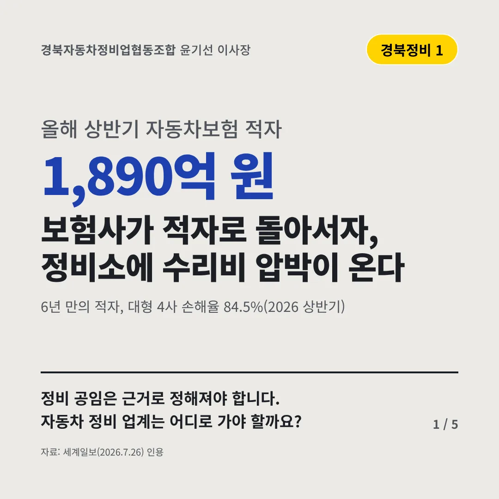
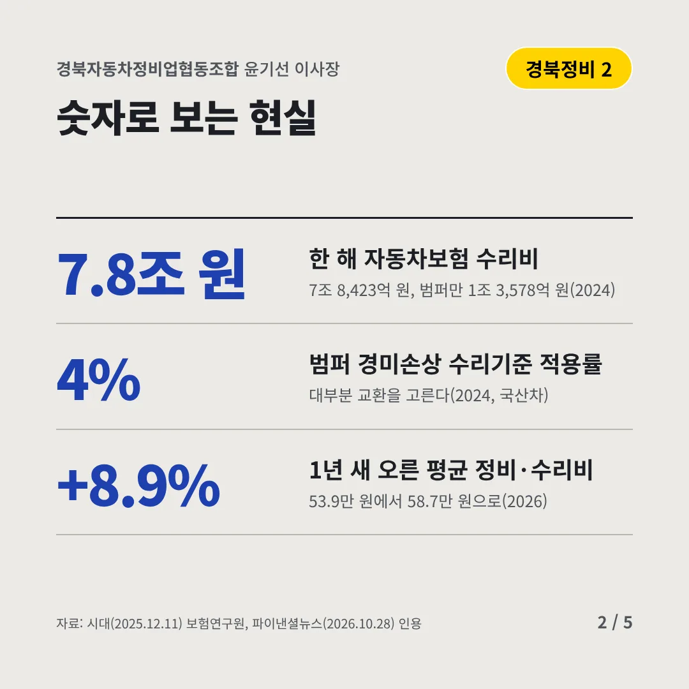
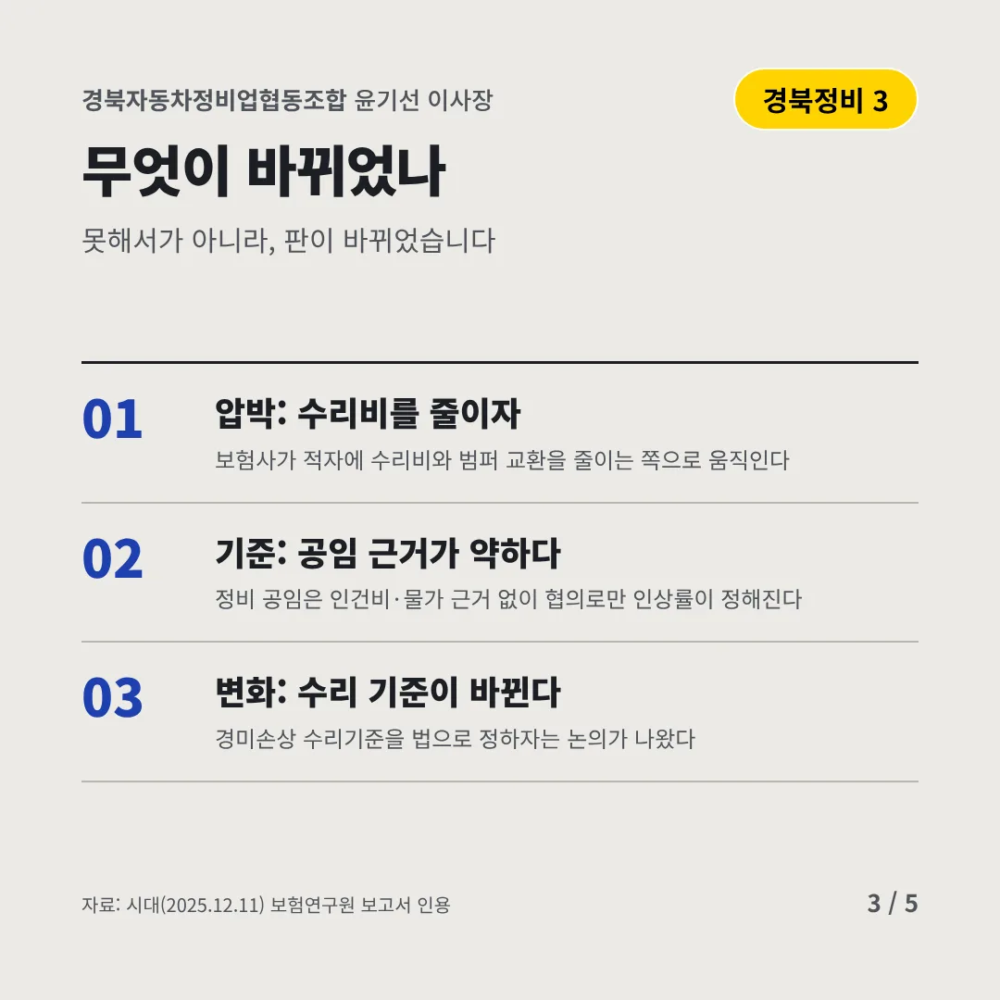
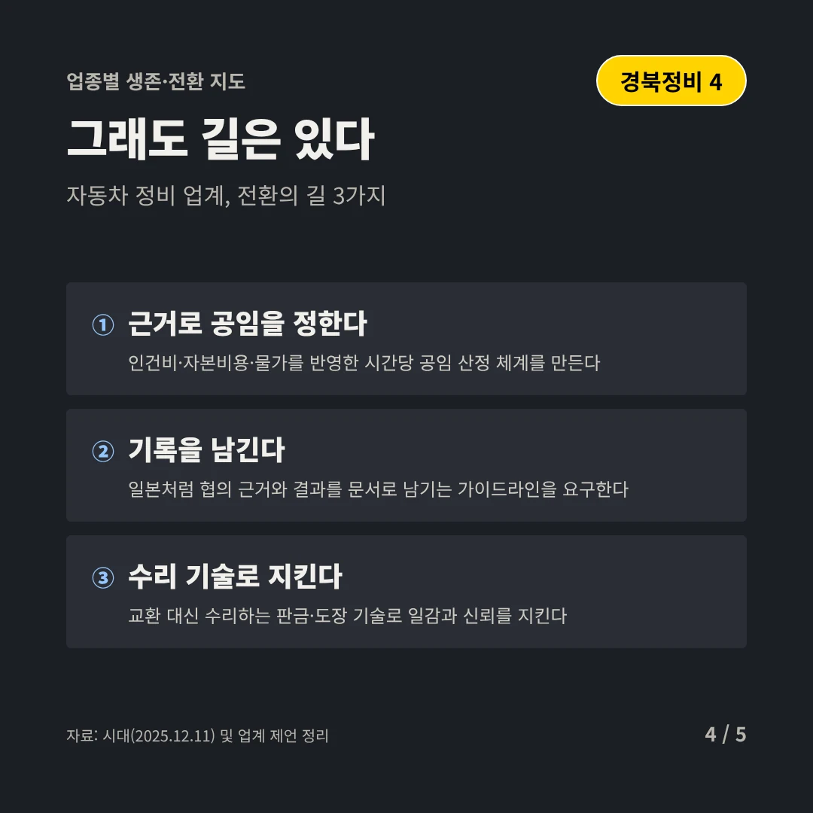
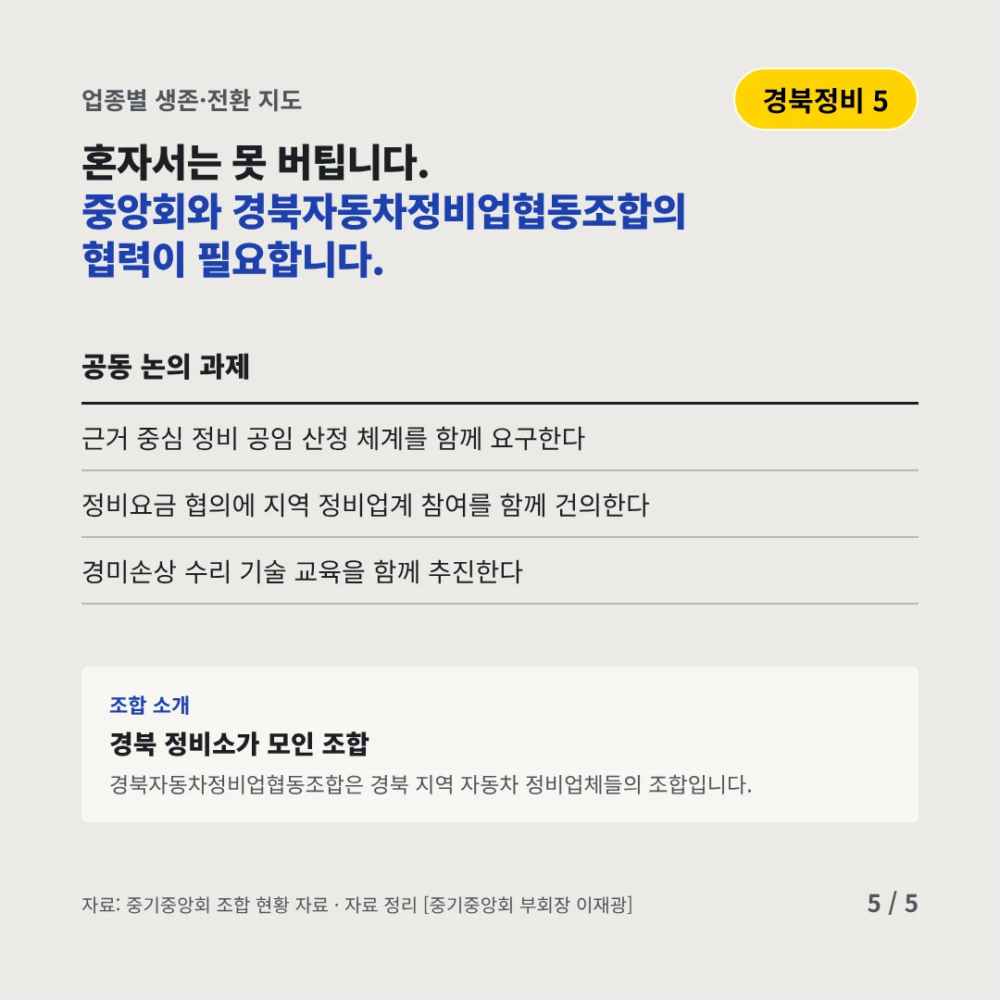
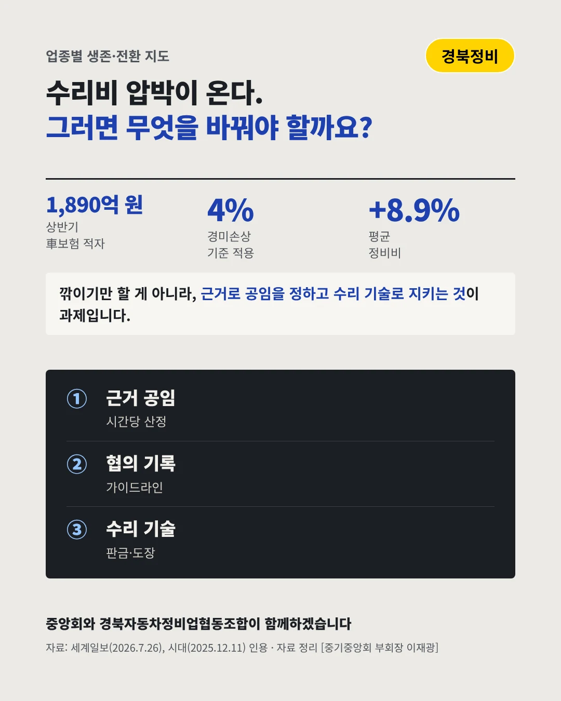

경북자동차정비업협동조합
보험사가 적자로 돌아서자, 정비소에 수리비 압박이 온다
1,890억 원 올해 상반기 자동차보험 적자






정비 공임은 근거로 정해져야 합니다. 자동차 정비 업계는 어디로 가야 할까요?
숫자로 보는 현실
- 7.8조 원한 해 자동차보험 수리비7조 8,423억 원, 범퍼만 1조 3,578억 원(2024)
- 4%범퍼 경미손상 수리기준 적용률대부분 교환을 고른다(2024, 국산차)
- +8.9%1년 새 오른 평균 정비·수리비53.9만 원에서 58.7만 원으로(2026)
무엇이 바뀌었나
- 압박: 수리비를 줄이자보험사가 적자에 수리비와 범퍼 교환을 줄이는 쪽으로 움직인다
- 기준: 공임 근거가 약하다정비 공임은 인건비·물가 근거 없이 협의로만 인상률이 정해진다
- 변화: 수리 기준이 바뀐다경미손상 수리기준을 법으로 정하자는 논의가 나왔다
그래도 길은 있다
- 근거로 공임을 정한다인건비·자본비용·물가를 반영한 시간당 공임 산정 체계를 만든다
- 기록을 남긴다일본처럼 협의 근거와 결과를 문서로 남기는 가이드라인을 요구한다
- 수리 기술로 지킨다교환 대신 수리하는 판금·도장 기술로 일감과 신뢰를 지킨다
한 장 요약

조합 소개
경북자동차정비업협동조합은 경북 지역 자동차 정비업체들의 조합입니다.
자료: 세계일보(2026.7.26), 시대(2025.12.11), 파이낸셜뉴스(2026.10.28)